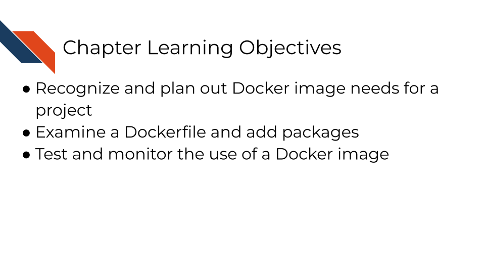

Chapter 3 Building a Docker Image

3.1 Phase 0: Revisiting the Importance of Docker Images
Docker is a prominent and widely used platform for creating containers. A Docker image specifically is the recipe or snapshot of a container, specifically defining what software (and their versions) should be packaged together. Once built, the container serves as a computing environment with the desired software, specifically an environment that will match the environment used by anyone else building that image. The Containers for Scientists course provides more explanation about how Docker images and containerization works.
![Relationship between an image and a container: In general, package managers like Docker work by capturing a snapshot of the environment and when that environment snapshot is shared, it attempts to rebuild it. In this example we show one computing environment, and using a package manager, we can take snapshot of it. That snapshot can be shared to another computer which can be used to attempt to build the computing environment on this computer. This will help address some differences in package versions between two individual’s computers.](03-build-an-image_files/figure-html/1ExTZsKDHKM0fIi0_tB80qd8cHvqjEDyNJp-OsnvZ19o_g361b9572af4_0_539.png)
Docker images are defined within a Dockerfile and usually begin by specifying a base image (another Docker image). When the image is being built, the base image will be pulled and serve as the starting or base layer of your new image. Then, additional packages can be added, though decide on what template for specifying packages is most appropriate depending on what types of packages (e.g., R or Python) you want and what your base image will work with.
Revisit the Containers for Scientists course for more information on
- creating a Dockerfile
- troubleshooting tips
- using a container
- how to access to specific data or analysis files in a running container
- how to build or test your image as you develop it
3.2 Phase 1: Repository Setup and Planning
3.2.1 Step 1: Set Up Your Working Environment
Navigate to your capstone sandbox repository.
Locate the Docker_Assignment/docker/Dockerfile - you will be making changes within this file.
Important: Don’t change the name or location of this file.
3.2.2 Step 2: Switch to Your Working Branch (if needed)
Verify that you’re on the branch you created during the set up instructions.
• The example used the name docker-assignment.
Option A: Using GitHub Desktop
Check the “Current Branch” Dropdown on the top left of the screen.
Use the menu to select the branch if you are not on the branch you expect to be on.
3.2.3 Step 3: Analyze Your Capstone Project Needs
In general, you may already have a reason for building a custom docker image, or a specific set of tools you wish to package together. The following questions and guidelines are helpful for real-world development of a custom docker image.
Here are some situations you might find yourself in where a docker image is helpful:
• You are building a Github action and need a specialized group of packages.
• You are building an analysis that you need a collaborator to run.
• You are building software you want to be reliable in its deployment.
Questions to ask yourself:
• What programming languages you’re using (R, Python, etc.)
• What packages/libraries your analysis scripts require
• What types of security concerns does this project have?
• Are there publicly available docker images that could cover your needs already?
For this capstone project specifically, you will create a custom docker image with very little guidance as to what packages it will include. Think about a couple of packages that are helpful in your day to day work, and build a docker image with that in mind.
3.3 Phase 2: Dockerfile Development
3.3.1 Step 4: Examine the Base Setup
Open Docker_Assignment/docker/Dockerfile
Look on Docker Hub for what base image best suits your needs – what’s the smallest image you can get away with that is from a verified source?
Understand what’s already included in the base image already. If you’re not sure what’s already included, consider inspecting the image with Docker Desktop
• Note: You don’t need to add a package that’s already there.
• Will it work with R or Python packages or both?
Once you’ve chosen a base image, add it to your Dockerfile.
3.3.2 Step 5: Add Packages Incrementally
Start by adding just one or two additional packages to your Dockerfile
Use the templates from the course:
• For R packages: RUN Rscript -e "install.packages('packagename')"
• For Python packages: RUN pip3 install packagename
Add comments explaining what each package does
3.3.3 Step 6: Build Locally
If developing locally (e.g., working through Command Line or GitHub Desktop, rather than on github.com directly), make sure the Docker application is running, and test your Dockerfile with:
Iterate fixing any build errors and re-building before pushing to GitHub. This saves time and GitHub Actions usage.
If you’re not developing locally, opening a pull request with changes to your Dockerfile on GitHub should trigger an evaluation action as explained in the next phase.
3.4 Phase 3: Testing and Iteration
3.4.1 Step 7: Open Your Pull Request
Commit your Dockerfile changes to your branch
Push the branch to GitHub
Open a pull request from your branch to the main branch
Changes to the Docker_Assignment/docker/Dockerfile triggers the Docker Assignment Eval test. Can you guess why?
Automatic Evaluation after changes to the Dockerfile
The capstone sandbox is using a GitHub Action with a trigger that is defined by changes to the Dockerfile within a pull request wanting to merge to main to evaluate the Dockerfile.
3.4.2 Step 8: Monitor the Automated Testing & Interpret the Results
On github.com, within your pull request, watch for the Docker Assignment Eval check to start running. This GitHub Action will attempt to build your Dockerfile.
Wait for it to complete. It will comment on your PR whether it successfully built or not. If you don’t see the comment try refreshing your browser
• Success: You’ll get a validation code in the comment
• Failure: You’ll get error messages explaining what went wrong. Read the error messages carefully - they contain clues for fixing issues
Interpret the results and proceed accordingly:
If the test’s comment provides a validation code, skip to Phase 5.
If the test’s comment contains error messages, visit Phase 4: Troubleshooting and Refinement of these instructions.
3.5 Phase 4: Troubleshooting and Refinement
3.5.1 Step 9: Debug Build Failures
Common issues to check:
Typos in package names
Missing dependencies (install system packages before language packages). Google or a code trained LLM (e.g., Phind) can be helpful for determining missing dependencies.
Incorrect syntax in RUN commands
Base image doesn’t support your installation method
3.5.2 Step 10: Iterate Until Success
Make changes to your Dockerfile on your branch
Commit and push changes
Each push will trigger a new test run
Keep refining until you get a successful build!
![You may have to troubleshoot iteratively until your dockerfile builds successfully. Git commit and push edits to your dockerfile and check your existing pull request to receive evaluation from automated assignment checks. Interpret the results. If you were not successful, troubleshoot and iterate this process as needed, checking your pre-existing pull request for new evaluation results after making additional changes. Or if you were successful in your assignment, submit the verification code to your Coursera quiz (or move on to the next section if you are not using Coursera or some certification method to take this course)](03-build-an-image_files/figure-html/1ExTZsKDHKM0fIi0_tB80qd8cHvqjEDyNJp-OsnvZ19o_g368818bb4f3_0_417.png)
3.5.3 Step 11: Merge Your Pull Request
Once you’ve received a validation code (congrats!), you can treat this like a team member approved your pull request. Go ahead and merge the PR and delete your branch so that your Dockerfile will be on the main branch, available for use in a later assignment if you want it.
Click the green button.Adjust the commit message and extended description as you see fit.
Click the green button.
button.
3.6 Phase 5: Completion
If you are taking the course on Coursera:
Collect Your Validation Code
Copy the validation code from the pull request comment earlier in the thread/above where you’ve merged and deleted your branch. You’ll need the code in order to submit your quiz.
Important: Make sure it’s a real validation code, not an error message or status code used to identify an error.
Submit Your Quiz
Go to your Coursera Graded Assignment (“Building a Docker Image”)
Paste the validation code
Submit the quiz to get credit for your work
3.7 Suggestions for Troubleshooting and Best Practices
Remember, this assignment is designed to give you hands-on experience with the container building process. The automated testing system provides immediate feedback, making it easier to learn through iteration rather than getting everything perfect on the first try.
3.7.1 Start Simple
- Begin with just the most essential packages for your analysis
- You can always add more in subsequent iterations
- A working simple image is better than a broken complex one
- Reference tips from the Containers for Scientists course as needed.
3.7.2 Leverage the Automated Testing
- The GitHub Action is your friend - it provides immediate feedback
- Don’t be afraid to make multiple attempts
- Each unsuccessful iteration and new error message teaches you something about container building
3.7.3 Read Error Messages Carefully
- Error messages may contain the exact solution you need to fix your problem
- Look for phrases like “package not found” or “missing dependency”
- Google specific error messages if they’re unclear
- Copy and paste the error code and include any relevant context to a code trained LLM (e.g., Phind) for additional help.